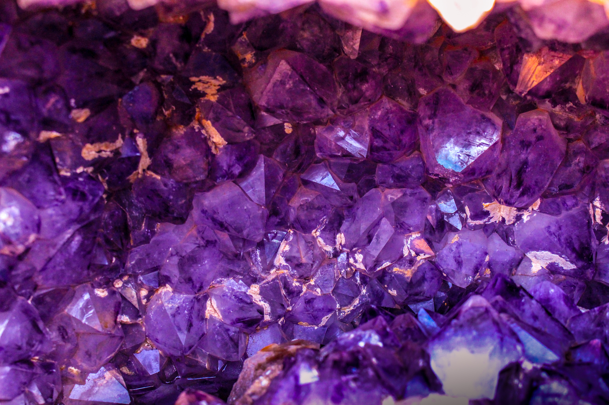

Purple

A gemstone (also called a gem, fine gem, jewel, precious stone, or semi-precious stone) is a piece of mineral crystal which, in cut and polished form, is used to make jewelry or other adornments.
A leaf (plural leaves) is the principal lateral appendage of the vascular plant stem, usually borne above ground and specialized for photosynthesis.